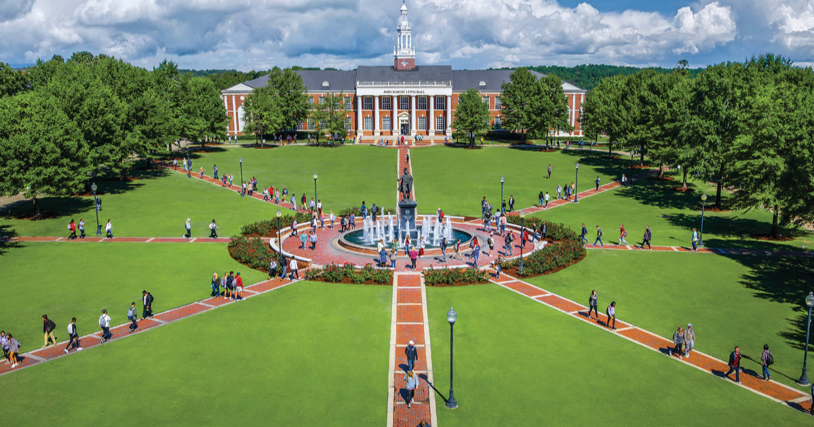

Small University is a hub of academic excellence and intellectual growth. We invite students from all corners of the world to join our community and pursue a high-quality education in a stimulating and creative environment.
About us
Small University is a modern educational institution with a rich history. Founded in 2000, our university has earned a reputation as a high-quality educational establishment. We offer a wide range of undergraduate, graduate, and doctoral programs that enable students to develop their abilities and achieve their highest academic aspirations.
Programs:
Our university offers a diverse range of academic programs, including:
Undergraduate Programs: Choose from our array of undergraduate programs in various fields that align with your interests and goals.
Master's Programs: Take a step forward in your education and career by selecting one of our master's programs.
Doctoral Programs: Learn more about the opportunities for doctoral studies at Small University.

Research:
Our university is distinguished by a high standard of research. Our scholars and students actively engage in research work in various fields of knowledge. We take pride in our research community and publications that have made a significant contribution to the world of science.
Admissions:
If you aspire to be part of our academic community, visit the "Admissions" page where you will find all the necessary information about the application process, deadlines, and requirements.
Campus Life:
Our campus is where learning combines with entertainment and personal development. Learn more about life in our student community, sporting events, cultural activities, and other opportunities we offer to our students.
Blog:
Read our blog where we share news, success stories of students, and current events at our university.